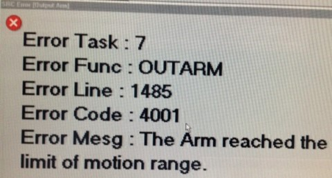
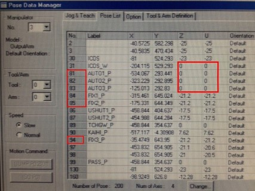
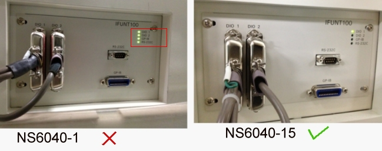

Service History
Subject: NS-6040 Output Arm error 4001 after HDD recovery & handler calibration
Handler Model: NS-6040 (NS6040-01, S/N: 12648)
Controller: SRC520
Date: 22 Jan 2013
Symptom
SEP NS-6040 Output Arm error 4001 "The Arm reached the limit of motion range" after hard disk recovery & handler calibration.

Action
22 Jan 2013Email support on Output Arm error T-4001 after HDD recovery & handler calibration.Advise customer:- redo MCORG for Output Arm X & Y ( >MCORG 1,2)- redo Output Hand 1 & Hand 2 Hand Height teaching.After above completed, problem solved.
25 Jan 2013
During our test, we now encountering sorting failure as my good units still goes to the NG trays, just like it is in offline state.
I already loaded If100_35.hex file from the exe folder. Please advice, thank you.
28 Jan 2013:
Email support on wrong binning after HDD Recovery last week.
Customer informed DIO tester interface is used.
Customer also sent photo of IFUNT interface panel behind handler having all GREEN LEDs ON.
Difference of NS6040-15 with NS6040-1 IF lamp indicators, does this means something is wrong? or is this negligible?

Informed customer to copy backup DIO setting back to C:\NS6000\CONFIG\TABLE
- copy "DIO_If" folder back to C:\NS6000\CONFIG\TABLE
- copy "DioInterface.def" file back to C:\NS6000\CONFIG\TABLE
Also redo the Loader.exe to load the IFUNT100 Hex driver.
29 Jan 2012:
Informed by customer that he redo everything from MMI re-installation in emails.
After that, handler able bin correctly and released to production after 12 hrs of testing.
Cause
22 Jan 2013
Base on the Output Arm robot3 mnp03.pos data, the Z & U value of p81, p82 and p83 were all 0.
By right, the value of Z & U should not be 0, it should be around -17 to -25mm.
After customer reteach Z & U for Output Hand 1 & 2, problem solved.
29 Jan 2013
For wrong bining/tester interface error, this is due to customer using DIO and did not copy DIO setting back to C:\NS6000\CONFIG\TABLE
After that need to use Loader.exe to load IFUNT100 driver.
Remarks